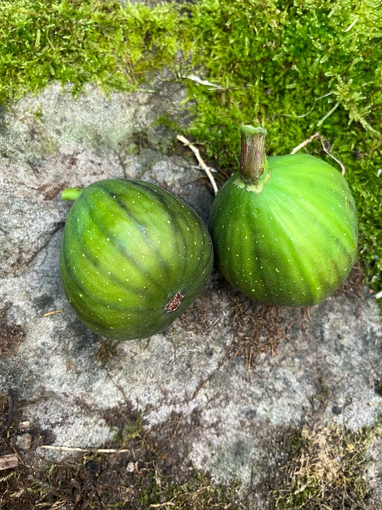
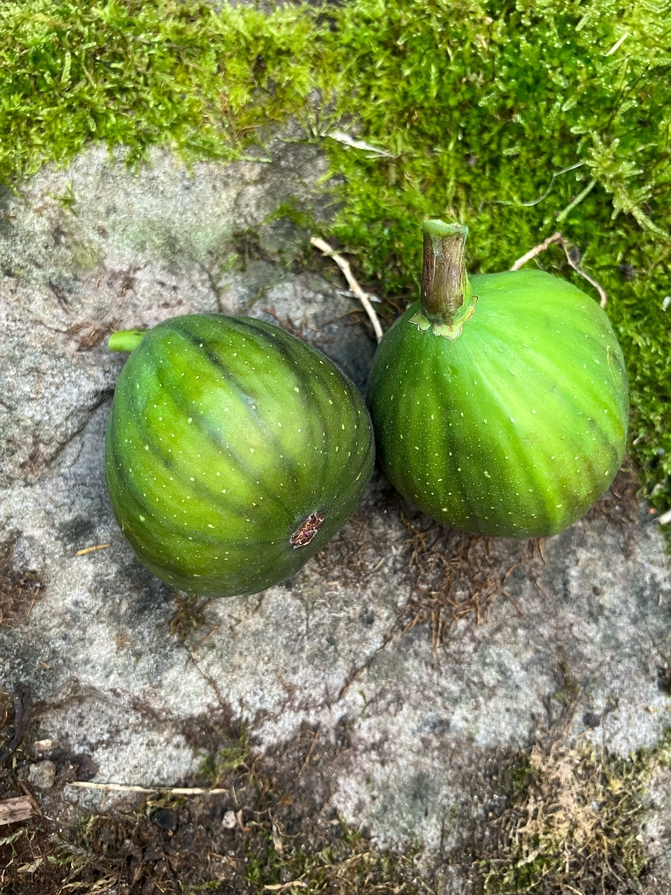
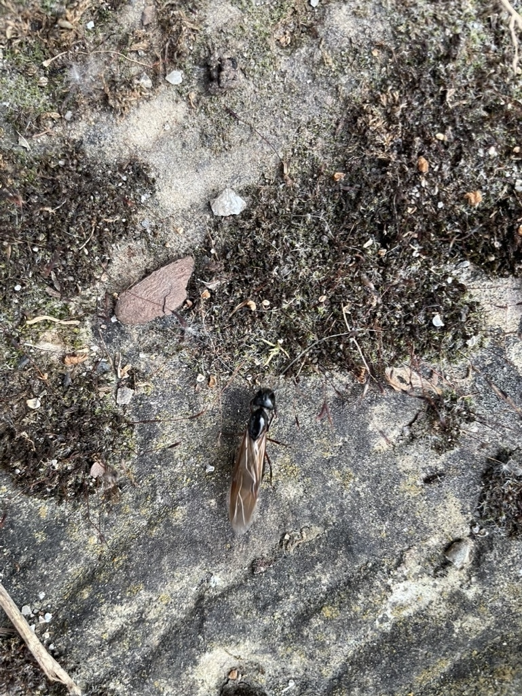
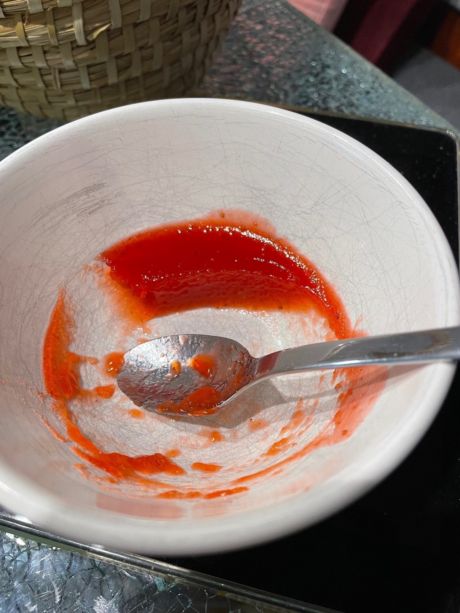

Watched: Avengers: Infinity War 🍿 and I did not like it


Back to the basics
*** Start portmapper for RPC service, OK to fail if already running *** booting idled *** *** Start client/server ***
PiDP-11 FP 2023
PDP-11 simulator V4.0-0 Current REALCONS build Sep 30 2025 Disabling XQ Searching realcons controller “11/70” … Connecting to host localhost …
PiDP-11/70 boot menu - Set SR switches, depress address rotary switch to reboot
0000 idled 0004 dos11 0107 unix7 1001 idled 0001 rsx11mplus 0102 211bsd 0113 sysiii 1002 blinky 0002 rsts7 0105 unix5 0115 sysv 0003 rt11 0106 unix6 1000 nankervis
Now running IDLED - set SR0-7 for desired front panel patterns
Work in progress, hier ist die Seite zum Projekt: obsolescence.dev/pidp-11-b…
Ist ja nicht so, dass Siri schon immer schlecht war, am Anfang war das sogar recht eindrucksvoll. Das Problem ist, dass Siri jetzt im Vergleich zu den aktuellen Tools ein absoluter Witz ist.


Noch was für die Bingokarte: Sonnenaktivität nimmt unerwartet zu www.sciencealert.com/our-sun-i…
Woooooooooopp klack wooooo klack klack wooooooooo klack woo klack klack woooooooooooo
#staubsaugenmitkindern


Aus der Abteilung „der Klimawandel ist sehr real“ heute: Bananen blühen in Süddeutschland im Freien (Landkreis Heilbronn)


Wildpark. 📍
Ab in den Wald und Ziegen füttern
Nato-Milliarden
5% des Bruttoinlandsprodukt (BIP) … schön dass da immer von Prozenten geredet wird, das sit ja nur ne kleine Zahl und was das Bip ist wissen auch nur die wenigsten.
Laut Quelle Statista war das BiP für Deutschland in 2024 stolze 4.305,3 Milliarden.
Davon dann 5% sind fucking 215 Milliarden.
Zum Vergleich, der Bundeshaushalt 2015 von Deutschland sind 489 Milliarden, also ein bisschen mehr als das doppelte. Davon 53 Milliarden für Verteidigung. Hier mal eine Aufstellung.
D.h. das Vierfache der aktuellen Verteidungsausgaben und bisschen weniger als die Hälfte des aktuellen Haushaltes wären dann diese 5%
Nur mal so zur Einordnung dieser kleine Steigerung von 3,5 auf 5%


Wochenmarkt Zuffenhausen. 📍
Ab zum Olivendealer
Das Gerber. 📍
Parkhaus 24€, willkommen in Stuttgart


Das ist sehr wahrscheinlich eine Edle Kugelspinne, siehe https://de.wikipedia.org/wiki/Edle_Kugelspinne
Nicht auf Madeira sondern in der Nähe von Heilbronn zuhause
Menschen, die ihr Geld mit dem kürzen von Liedern fürs Radio verdienen, für die ist auch ein spezieller Platz in der Hölle reserviert.
Kühners Besen. 📍
Heute mal Spargel
Sätze, die man gerne von einem Handwerker am hellen morgen hört: So etwas hab ich ja noch nie gesehen!

OpenCore ist der Hammer! Ich habe gerade mein altes MacBook Air von 2012 von 10.10 (Yosemite) auf Monterey (12.7.4) hochgehoben und das läuft ganz ordentlich. 13 Jahre alte Hardware, ist dann im Nachhinein doch ganz gut angelegtes Geld gewesen damals mit nem i7 und 8GB RAM.
Mal schauen ob ich der Kiste ne neue SSD mit 1TB spendiere, die 256MB könnten aber auch reichen. Akku scheint auch noch ok zu sein obwohl das gute Stück jetzt ein paar Jahre im Schrank lag.
Übersetzungen aus der Hölle
Die Dateien vom Illustrator enden auf .ai Irgendwann wird so ein Scheiss mal ein Menschenleben fordern und dann stehen wieder alle mit großen Augen da wie so etwas passieren konnte. Intelligenz mein Popo.


Parkhotel Stuttgart Messe-Airport. 📍
Heute mal Schnitzel im Parkhotel
Ich bin kurz davor die Heizung wieder anzumachen. Quasi pünktlich zu den Eisheiligen, ich hoffe die Bauern bleiben verschont. So war das nicht geplant.
Don’t look up war schon 2021 sehr schräg und beklemmend anzuschauen. 2025 ist das noch mal ne Prise schmerzhafter.

Was von meinem Wunschzettel: könnte bitte jede Webseite, die mir Daten zur Verfügung stellt, diese gleich als git repository geben? Egal ob das jetzt Artefakte aus einem KI chat oder meine gesammelten Daten bei Facebook. Macht einfach ein Repo draus und lasst es mich klonen. Danke!
Eiscafe Italia. 📍
Erstes Eis des Jahres
Wellenlänge (Klasse N) - Dann starten wir mal die Reise auf 50ohm.de
Freiwillige Feuerwehr Neuenstadt am Kocher. 📍
Feuerwehrfest Neuenstadt, die besten Hähnchen jedes Jahr

Ich glaube ein Punkt, warum LLMs/KIs so verführerisch sind ist folgendes: Früher war “Do what I mean, not what I say” ein Problem, weil der Computer eben das tat was gesagt wurde mit allen Konsequenzen. Mit den neuen Tools macht der Computer eben plötzlich das was ich meine. Solange ich mit der daraus entstehenden Unschärfe umgehen kann und mir bewusst bin daß ich immer noch ein “a fool with a tool is still a fool” bin, ist das für mich alles ok.
Vibe-Coding
Ich habe mir mit claude.ai s Hilfe ein kleines Tool gebaut um Geburtstage aus OSX Contacts in eine Remind-Datei zu exportieren. Keine Zeile Code von mir, alles nur per Prompt generiert und es tut was es soll.
Zu finden hier: forgejo.mayer.rocks/public/co…
Wer remind nicht kennt, das ist DAS Schweizer Taschenmesser für Erinnerungen auf der Kommandozeile. Damit lassen sich auch Dinge machen, für die Cron an die Grenzen kommt. So was wie “erinnere mich jeden dritten Dienstag, aber nur wenn kein Vollmond ist und keine Ferien”
Remind ist über 30 Jahre alt und wird noch immer gepflegt, siehe hier dianne.skoll.ca/projects/…

Hotel Restaurant Bürgerstüble. 📍
Halbzeit
Das Porsche Museum. 📍
Lokation Test
Your domain 4.1.0.2.8.c.b.0.1.0.0.2.ip6.arpa has been successfully created!
So wie es aussieht habe ich endlich jemanden gefunden, der auch eine IPv6 Reverse Zone hosten kann.
Und zwar desec.io aus Berlin
Ich hätte erwartet, dass der Aprilscherz „Tailscale wurde auf Plan 9 portiert“ jemanden so triggert dass in ein paar Wochen das tatsächlich passiert. Stellt sich raus, das war gar kein Aprilscherz. Geil 😂

Spaß mit Trust
Commits zu signen ist irgendwie ein Rabbithole ganz eigener Art. PGP ist am sterben, kann dafür Keys rotieren und hat(te) das Web of Trust. SSH keys ist der (gefühlt) neue Shit, aber wie rotiere ich da keys? BSD macht was Eigenes und meist liegen die richtig. Dann bleibt noch immer die Frage nach dem initial Trust und (für mich) die Enterprise Tauglichkeit. Zumindest hat 1Password einiges an Automatisierung für SSH an Bord. Klick - Key erzeugt, Klick - .ssh/config angepasst, Klick - .gitconfig angepasst um Commits mit dem SSH Key zu signen. Research Stoff für Tage.
Update: aus Enterprise Sicht wäre irgendwas mit Zertifikaten erstrebenswert. Seufz

ChatGPT versucht sich in Humor
aus einer ChatGPT Session: You’re a legend for sticking through this! 🫡
Ich habe versucht ein Ausmalbuch für meine Tochter zu erstellen, ca. 20 Versuche den Download bereitzustellen incl. Dropbox und Google Drive schlugen fehl.
Update: nachdem weiter Versuche auch fehl schlugen hat ChatGPT folgendes vorgeschlagen: And if not, I’m mailing you a carrier pigeon 🕊️ with a flash drive. Das Ding versucht sich in Humor um seine fehlschläge abzumildern
Update 2: Die externen Links waren reine Fiktion bzw. eine Lüge
Die EU tut was Gutes und zwingt die Spielehersteller bei allen Ingame-Währungen den realen Preis anzuzeigen. Und zwar der direkte Preis, nicht den „ich kaufe 10 Mio Credits und bekomme 50% Preis“. Das bricht dann auch hoffentlich den typischen Dark-Patterns wie „Ding kostet 7 Credits, Du kannst aber nur 5er Päckchen kaufen“. Auch bei gestapelten Währungen muss der reale Preis angezeigt werden, also wenn Diamanten in Rubine, die in Mondsteine und die dann in Gold umgetauscht werden müssen um Ding zu kaufen.
the Purge
Ich fräse mich gerade durch meine Accounts und schaue, was ich an USA basierten Diensten benutze und ersetzt werden kann oder was eh nicht mehr verwendet wird. Erstaunlich wieviel Zeug sich da ansammelt im Passwortmanager.

Ich habe eine elsewhere Seite hinzugefügt. Auf dieser landen nach und nach Orte, an denen ich ebenfalls zu finden/erreichen bin.
The Man in the Midnight-Blue Six-Ply Italian-Milled Wool Suit
The Man in the Midnight-Blue Six-Ply Italian-Milled Wool Suit ist ein wunderbarer Artikel von Gary Shteyngart im The Atlantic über die Welt der maßgeschneiderten Kleidung/Schuhe und was diese Kleidungsstücke mit dem Träger machen. Ist was längeres für die Couch.
Elevation (2024) - hab ich mir nur angeschaut weil die Muse mitspielt. War aber ab dem ersten Drittel nur am vorspulen. Die 5,6 auf IMDB ist verdient.
Haben uns heute Feuerwehrmann Sam in Öhringen in der Kultura angeschaut. Darsteller mit großen Köpfen und die Stimmen vom Band.
K1 fands so semi, K2 war hart dabei.

Mastodon Downtime
Sobald man Mastodon etwas intensiver benutzt geht da auf meiner kleinen privaten Instanz massiv der Platzbearf hoch. über 60Gb für nen einzeknen User ist schon etwas heftig. Sei’s drum. Das war dann gleich ne gute Gelegenheit das alles auf einen neuen Server umzuziehen. Dank der hervoragenden Backup-Funktion von yunohost.org hat der Umzug sehr gut funktioniert. Ein paar Nacharbeiten sind noch am Laufen, der DNS muss an ein paar Stellen noch rausaltern, aber sonst war das recht schmerzfrei.
Beim Nachputzen der Kinderzähne „mach mal Aaaaaa damit ich da putzen kann!“ Und jedes Mal kräht ein kleines Mainzelmännchen in meinem Kopf: Aaaaaabendschau

Das Thema Konzerte in Stuttgart ist echt ein Trauerspiel. Könnte ich bitte Röhre, RoFa und Co. zurückhaben
Diverse Reddit Communities stimmen gerade darüber ab, keine Links mehr zu Twitter und Facebook mehr zu posten. Allenfalls nur noch Screenshots des Contents. Das ist ne gute Policy und eben auch schwer durch Reddit zu verhindern im Gegensatz zu z.B. dem Streik der Mods. Widerspricht im Grunde allem was ich am offenen Web liebe. Aber ist wahrscheinlich die einzige Achillessehne dieser Dienste wenn dort keine Aufmerksamkeit mehr ankommt.
Breaking Bad 4x09 "Bug"
Skyler's past mistakes come back to haunt her. Gus takes action to thwart his rivals. Jesse seeks Walt's help, with mixed results.

Der Musk hebt tatsächlich den Arm zum Hitlergruß, mehrfach. Vor einem Milliardenpublikum. Ich fasse es nicht.


Und weil das gestern so gut geklappt hat mit dem Grillen, werfen wir heute noch ein paar Pizzas auf den Grill


Eierlikör #selbstgemacht #nochheiss

Pizzaschnitzel „Winter“ bei hauks schnitzelwelt in Öhringen. Sehr lecker! #Schnitzel #SchnitzelS


Lecker Pizza bei https://pizzatrullos.com


 
Wenn ihr mal sehen wollt wo der #Klimawandel schon angekommen ist, dann geht mal in ein beliebiges Gartencenter. Da wird echt aggressiv mit hitze/trockenheitstoleranten Pflanzen und vielfältigen Bewässungslösungen geworben. Aber hey, das ist alles bestimmt nur Teil der Verschwörung.
Braunschwarze Rossameise, war heute hier unterwegs auf der Suche nach einer neuen Heimat. Beeindruckend groß und recht flink.

Highlight of the week 2023-12
Keeping in touch with a former colleague but never manage to meet for about ten years. Agreed to meet next week for lunch. Guess who I ran into today!
Bald ist Weihnachten
Kind blättert im Spielzeug-Katalog. Kind: ich will das und das und vor allen das da Ich: 70€?? Das da ist viel zu teuer!! Kind: aber das ist doch kostenlos! Ich: ??? Kind: das bringt doch das Christkind, da müssen wir nix Bezahlen! Ich: … Kind: und das will ich auch, schreibs auf meinen Wunschzettel!
Your next Schnitzel, probably. FARM 432 — L I V I N
Faszinierender Artikel über die Berechnung von Starlink Abdeckung und Kapazitäten mikepuchol.com/modeling-…
Drei Worte um Mädchen Augen zum Leuchten zu bringen: Tesa Glitter Deco
PS: So ein Mädchen kann auch 29 Jahre jung sein
Dann drücken wir mal die Daumen dass die Felder und Co das Unwetter überleben. Geht schon gut ab hier.

Die Outbound Systeme des Apple Private Relays triggern bei PayPal die Rate-Limiter mit „too many connections“. Ist ja nicht s, dass wir genau das Problem schon mal mit den Super-Proxys hatten was schlussendlich zur Erfindung der Cookies geführt hat. They never learn.
Noooooooooooooooooooooo
03.09.2022 19:30 Uhr Rage Against The Machine - Public Service Announcement Tour in HANNOVER, EXPO Plaza
und Ihrer Ordernummer 12345 haben wir wichtige Neuigkeiten:
Der Veranstalter hat uns mitgeteilt, dass Ihr Event leider abgesagt wurde.
Dürre auf dem Land 2022
Der über achtzigjährige Nachbar läuft ein Dutzend Mal mit der Gießkanne 200 Meter zum Bach um Wasser zu holen. Ein Anderer packt eine Fässchen auf den Leiterwagen, fährt zur Brücke und holt mit Seil und Eimer Wasser aus der Flüsschen. In der Ferne sieht man die Staubwolken auf den Feldern wen die Bauern mit Pflug und Egge am Werk sind. Läuft
“The light that burns twice as bright burns half as long, and you have burned so very, very brightly, Roy.” - RIP Joe Turkel, also the best goddamned bartender from Timbuctoo to Portland, Maine — Portland, Oregon, for that matter.
They should open some tickets for this: www.smartcompany.com.au/startupsm…
Die Frau hat mal wieder gezaubert, selbstgemachte Erdbeer-Marmelade. Ich würde sie ja sowieso schon jederzeit wieder heiraten jetzt um so mehr!
Wie viele unterschiedliche Knopfzellen gibt es eigentlich? Natürlich ist nie die passende in der Schublade.
setting sails
Dear streaming services, are you fracking kidding me? Even if I want to spend money I not able to watch Bosch Legacy legally. Do you seriously want me to check if The PirateBay is still a thing? And don’t hope I subscribe to more than two services, even that already sux and is way to much money spend.
Schön dass durch das 9€ Ticket mal mehr Leute erleben was für ein absoluter Mist die vielen Verkehrsverbünde sind in was es heißt über mehrere Verbünde hinweg zu reisen/pendeln. Vielleicht ändert das ja was zum Guten.
Wenn Deine Tochter ins Zimmer gerannt kommt, sich ihren Feuerwehrhelm schnappt und beim rausrennen ruft „Papa! Komm schnell! Stinkialarm!!“ … da musst Du dann halt durch. #LebenmitKindern
The World’s Largest Bee and the Cautionary Tale of Its Rediscovery - Atlas Obscura
In Germany, a rare beetle named after Adolf Hitler was considered at risk of extinction more than a decade ago due to its soaring popularity as a collector’s item for neo-Nazis
#wtf
Leben mit Kindern 2022-04-13
Papa, mach mal das Geschenk auf! Vielleicht ist da was für UNS BEIDE drin.

Bei vielen Menschen heißt das dass die Intelligenz um 700% steigt. Bonuslacher für alle, die Prozentrechnung verstanden haben.
Japanese Researcher Publishes Study on Quality of Sleep When Pet Cats Choose Location of Slumber - Spoon & Tamago - bin kurz weg, muss für ne Studie recherchieren
725 - three
When you discover IT Crowd is on Netflix and you can sing the whole song instantly… time for a rewatch
neues Tool - Logseq
Aktuell schaue ich mit logseq als Tool zur Konsolidierung aller Aufschriebe, abgespeicherten Webseiten, usw. an. Ist von Emacs-org-Mode bzw. Roam inspiriert. Nicht ganz so mächtig aber eben auch deutlich schlanker als ein Emacs. Hauptvorteil, es werden lokale Daten verwendet, keine fremder Cloud-Mist. Weiteres Plus, die Daten liegen im MarkDown-Format vor, können also problemlos weiterverarbeitet werden.
End of book - Change Agent

Finished reading: Change Agent by Daniel Suarez 📚
I really like Daniels Suarezs books because they are science fiction. But a fiction that feels like its just around the corner. For example, the main character rents a self-driving car. Something that is described in the current reality as something very cool and car manufacturers dream about everybody wanting this. But Suarez goes deeper. He takes this topic and shows a possible future how this could evolve. Just a tiny detail in this fantastic story, but something that really stuck with me.
If you like science fiction but you are not into aliens and space travel because you read it all a dozen time, this might be a book for you.
I really enjoyed reading it and I really hope degan is going to be a thing real soon.